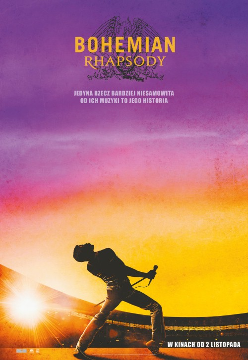
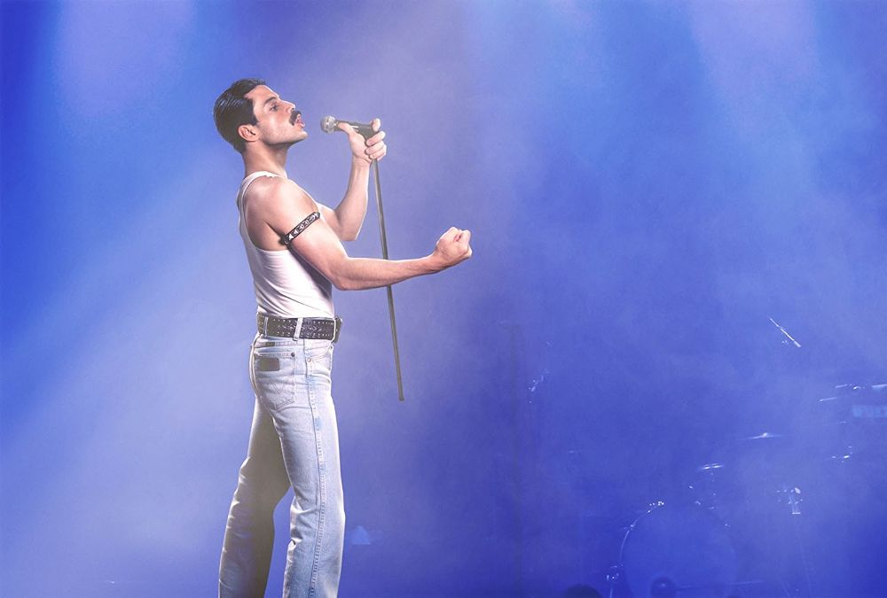

Ciekawostki
- Pierwsze wspólne koncerty muzycy grali jako grupa „Smile”, szukali jednak nowej nazwy dla
swojej grupy. Freddie Mercury zaproponował „Queen”, mając pełną świadomość królewskiego
brzmienia nazwy, a zarazem dwuznaczności tego słowa. W tamtych latach było to również wulgarne
określenie homoseksualisty.
- Muzyka zespołu wykorzystywana jest często w wielu produkcjach filmowych. Formacja nagrała
ścieżkę dźwiękową do filmu „Flash Gordon”, a następnie wydała ją jako samodzielny album. Muzycy
nagrali także i wydali album „A Kind of Magic” z utworami napisanymi do filmu „Nieśmiertelny”.
Także w grach komputerowych wykorzystywane są utwory („Grand Theft Auto”, „Guitar Hero”,
„Rocksmith 2014 Edition”). Grupa wydała grę „Queen: The Eye”. Sony Computer Entertainment
wypuściło sygnowaną przez Queen wersję gry SingStar, która zawiera 25 piosenek w wersji na
konsolę PS3 oraz 20 w wersji na PS2. Ukazała się także gra na system iOS z muzyką Queen, oparta
na motywach filmu „Flash Gordon”.
- Queen ma na swoim koncie mnóstwo nagród m.in. Brit Award, nagroda Grammy, MTV. Zespół nagradzany
był zarówno za poszczególne przeboje, albumy, single, teksty i kompozycje, jak również
otrzymywał indywidualne nagrody za wokal czy grę na gitarze lub perkusji. Ponadto wielokrotnie
doceniany był za całokształt twórczości. Na dwóch najważniejszych rynkach muzycznych na świecie,
w Wielkiej Brytanii i Stanach Zjednoczonych, ich albumy i single kilkukrotnie otrzymywały status
złotej bądź platynowej płyty. W marcu 1996 roku Roger Taylor i Brian May odebrali w Warszawie w
Teatrze Polskim nagrodę Fryderyki 1995 w kategorii „najlepszy album zagraniczny” (za krążek
„Made in Heaven”).
- Utwory Queen śpiewało wielu znanych artystów. Ich piosenki wykonywali m.in. Metallika, Guns N'
Roses, Extreme, Def Leppard, U2, Robert Plant, Seal, Lisa Stansfield czy Liza Minnelli i Paul
Young. Ponadto gościnnie z Queen śpiewały także takie gwiazdy jak: Elton John, David Bowie,
George Michael, Wyclef Jean, Michael Jackson, Zucchero Annie Lennox czy nawet Montserrat Caballe
- To do przeboju Queen „Bohemian Rhapsody” został nakręcony pierwszy na świecie teledysk
promocyjny - powstał on w cztery godziny i kosztował 4,5 tysiąca funtów.
- Grupa Queen spędziła aż 1.389 tygodni na UK Albums Chart, będąc przy tym niekwestionowanym
numerem 1. Zepchnęła na pozycję drugą dotychczasowych liderów – zespół The Beatles (1.293
tygodni), Elvisa Presleya (1.280 tygodni) czy U2 (1.150 tygodni). Statystyki te opublikowało
wydawnictwo Guiness World Record.
- Ostatni koncert w historii Queen odbył się 9 sierpnia 1986 roku w parku Knebworth i był to
największy występ zespołu na terenie Wielkiej Brytanii (150-tysięczna publiczność, scena o
powierzchni 560 m², 180 kolumn głośnikowych, system nagłaśniający o mocy pół miliona watów).
- Zespół wydał łącznie 15 albumów studyjnych, 8 albumów koncertowych, 16 kompilacji czyli
wyselekcjonowanych zbiorów największych hitów, 9 zestawów płyt, aż 34 albumy video oraz 74
single i mini albumy.
- W 2018 roku powstał film przedstawiający biografię Freddiego Mercury'ego oraz historię zespołu.
Zatytułowano go jednym z większych przebojów zespołu - "Bohemian Rhapsody"


Plakat i zdjęcie z filmu "Bohemian Rhapsody"
źródło:
https://prestigemjm.com//2016/queen-10-ciekawostek-o-zespole,news,324,3014.php